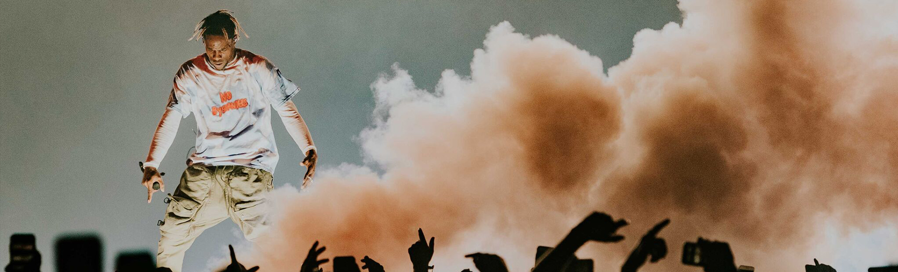
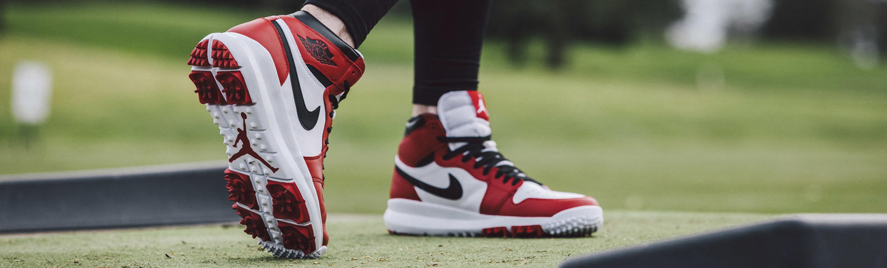

Virgil Abloh este unul dintre cei mai cunoscuti designeri de moda din zilele noastre. Brandul sau Off-White, a facut valuri inca de la primele colectii lansate, iar popularitatea acestuia este de necontestat pana si astazi. Totusi, cel mai mare impact au avut cu siguranta prima sa colectie, dupa ce si-a asumat rolul de director artistic in cadrul Louis Vuitton si colectia sa de adidasi, "Nike: The Ten ".
"The Ten " ramane in continuare una dintre cele mai populare si ravnite colectii de catre pasionatii de adidasi de pretutindeni. Cu preturi de pana la $ 2000 pentru o pereche, este evident insa ca aceasta nu este accesibila tuturor.
Pentru a ne reaminti de hype-ul generat de lansarea acestei colectii, in , va lasam mai jos un video realizat de un bun prieten. In acest video el prezinta fiecare pereche in parte.

Travis Scott colaboreaza cu Nike
Se pare ca rapperul american Travis Scott are o noua colaborare cu Nike !
Zvonurile din industrie ne dau de inteles ca acesta urmeaza sa lanseze o pereche de Air Jordan 1 , care va avea evident niste caracteristici speciale. Vorbim despre o culoare nemaintalnita pana acum pe nici o pereche de Air Jordan , precum si de un Swoosh intors invers.
Deocamdata nu stim mai multe, insa va vom tine la curent cu informatiile legate de aceasta colaborare.

O noua pereche de Jordan 1 ?
Probabil ca cel mai cunoscut model de adidasi al tuturor timpurilor este modelul: "Air Jordan 1: Chicago" , lansat pentru prima oara in. In anii urmatori am asistat la nenumarate relansari a acestui model apreciat de toata lumea.
Totusi, a trecut foarte mult timp de la ultimul re-release, acesta avand loc in . Este timpul ca acest model de adidasi sa revina pe rafturile magazinelor, iar postarile recente de pe pagina de Facebook a brandului Nike sugereaza faptul ca o re-lansare este iminenta. Noi o asteptam cu sufletul la gura si va asiguram ca odata cu relansarea, veti putea achizitiona aceasta pereche chiar la noi pe site.